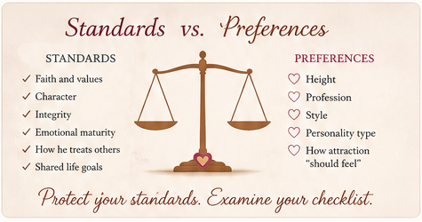

“Am I being too picky, or am I simply refusing to settle?”
This can be a difficult question when you desire marriage.
Perhaps a good man shows interest in you, but something doesn't quite match what you imagined. You wonder whether saying no means you are protecting yourself—or overlooking someone who could actually make a good husband.
On the other hand, you don't want your desire to get married to pressure you into accepting a relationship you shouldn't.
So how do you know the difference?
Fear Can Push You in Either Direction
Fear doesn't always look like running away from relationships. Sometimes it can influence you in opposite ways.
You may fear choosing the wrong man so much that you become overly cautious. Every imperfection becomes a reason to walk away.
Or you may fear never finding a husband and gradually lower important standards because you are afraid another opportunity may not come.
When fear is driving your decisions, it becomes harder to evaluate a man clearly.
Standards and Preferences Are Not the Same Thing
One helpful step is learning to separate your standards from your preferences.
Standards
- His faith and values
- His character and integrity
- His maturity and responsibility
- How he treats others
- Whether you can build a healthy, godly marriage together
Preferences
- His height
- His profession
- His style
- His personality type
- The way you expected attraction to feel
There is nothing wrong with having preferences. Attraction matters, and you don't have to marry someone simply because he is a Christian and a good person.
The problem comes when every preference quietly becomes a requirement.

“Don't Be Too Picky” Doesn't Mean “Settle”
The opposite mistake can be just as dangerous.
If you have been waiting for years, watching friends marry, or worrying about age and children, fear can whisper:
“Maybe I should just take what I can get.”
Don't let fear make that decision for you either.
Marriage is too important to choose from desperation. You don't need a perfect man, but you do need wisdom about which imperfections you can live with and which problems could undermine a healthy marriage.
Ask Yourself a Better Question
Instead of only asking:
“Do I like everything about him?”
ask:
“Does what I dislike reveal a serious concern, or is it simply different from what I imagined?”
And instead of asking:
“What if nobody better comes?”
ask:
“If I were not afraid of remaining single, would I still believe this relationship is wise?”
Those questions can help expose whether wisdom or fear is influencing your decision.
Protect Your Standards—But Examine Your Checklist
You don't need to abandon godly standards to find a husband. But you may need to examine whether some things you call “standards” are actually preferences.
So take another look at your list.
What must genuinely be present for you to build a healthy, godly marriage?
And what would simply be nice to have?
The goal isn't to find a perfect man. It is to develop the wisdom to recognize a man with whom you can build a healthy, godly marriage.
WANT TO GO DEEPER?
Continue the Journey with Single and Searching?
In Single and Searching?: The Lady's Guide to Find and Attract the Right Husband, we explore these questions in greater depth—fear, expectations, preparation, recognizing the right kind of man, and making wise decisions about marriage.
Because preparing for marriage isn't simply about finding someone. It's about learning how to choose wisely when someone comes.

— Dr. Michael Agronah & Dr. Mary Agronah
Beautiful Marriage Garden